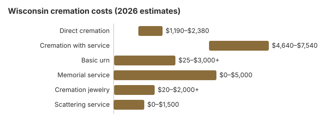

Cremation Costs in Wisconsin (2026)
Cremation is now the majority choice in Wisconsin, at about 58% of deaths by the rate we use. Our estimate puts direct cremation at about $1,700 and cremation with a funeral at about $5,800. Wisconsin also has more detailed cremation law than most states, starting with a 48-hour wait. This page covers the prices, those rules, the state's WFCAP help with costs, and the veterans cemeteries.
Wisconsin Cremation Arrangements
Direct Cremation
- The cheapest Wisconsin cremation
- No funeral or visitation first
- The body is taken straight to the crematory
- The family receives the ashes
- A memorial can be held later on
Cremation with Service
- A funeral, followed by cremation
- Family may view the body
- Service at a church or funeral home
- A simple urn is often included
- Similar to a traditional funeral
What Each Part of a Wisconsin Cremation Costs
| Part of the bill | Wisconsin estimate | Range |
|---|---|---|
| Direct cremation | $1,700 | $1,190 – $2,380 |
| Cremation with service | $5,800 | $4,640 – $7,540 |
| Basic urn | $50 – $300 | $25 – $3,000+ |
| Memorial service | $500 – $2,000 | $0 – $5,000 |
| Cremation jewelry | $50 – $500 | $20 – $2,000+ |
| Scattering service | $200 – $600 | $0 – $1,500 |
About the Wisconsin estimates: they come from our price model, not a survey of Wisconsin crematories, so read them as a guide rather than a quote or professional advice. See our method for the details, and the disclaimer.
State sources: Wisconsin DHS.

How Wisconsin Cremations Are Arranged
In Wisconsin, a direct cremation is normally arranged through a licensed funeral home even when there is no service, so the paperwork looks much like a full funeral: the authorization form, the 48-hour wait and the coroner's or medical examiner's permit. That does not change our $1,700 estimate, but it does mean the timeline depends on those steps rather than on the cremation itself.
Cremation Resources
- Funeral Consumers AllianceNonprofit advocacy: compare cremation providers
- Cremation Jewelry GuideMemorial keepsakes and remembrance options
- Cremation vs. Burial CostsSide-by-side cost comparison
- Pet Cremation CostsOptions and prices for pet cremation and memorials
- Final Expense InsuranceCoverage options to help pay for cremation costs
Compare Funeral Costs
- Average Funeral Cost in 2026National cost breakdown with real prices
- Cremation vs. Burial Cost ComparisonSide-by-side price comparison to help you decide
- Funeral Cost BreakdownEvery line item explained: know what you're paying for
- Cheapest Funeral OptionsLower-cost alternatives, with typical price ranges
- Direct Cremation: Most Affordable OptionNFDA 2023 median $2,645 with a family-supplied container (latest available)
- How to Compare Funeral PricesStep-by-step guide to getting the best price
Lowering a Wisconsin Cremation Bill
Ways Wisconsin families keep costs down:
- Compare three price lists. Ask Wisconsin funeral homes for their written General Price Lists and compare the direct cremation lines.
- Look for the separate direct cremation price. If a Wisconsin home offers it in a package, the price list must still show it on its own.
- Check scattering rules first. Local ordinances and landowners decide where ashes may go in Wisconsin.
- Hold the memorial yourself. A gathering at a church, park or home costs far less than a funeral home ceremony; in the Wisconsin table the gap between direct cremation and cremation with a service is $4,100, and the date can be whenever the family is ready.
- Ask about help with the bill. Veteran benefits, Medicaid assistance through the county or tribal agency that runs WFCAP, and other programs can pay some or all of a Wisconsin cremation.
More ideas for a Wisconsin family on a tight budget are in our affordable funeral options guide and our guide on how to pay for a funeral with no money.
Questions Before a Wisconsin Cremation
Settle these with a Wisconsin provider before signing:
- What direct cremation covers. The General Price List must say; it should include transport, the cremation and a basic container for the ashes.
- No casket required. Under 16 CFR 453.3(b), a Wisconsin provider must let you use an unfinished wood box or other alternative container, and Wisconsin law bars a crematory from refusing remains just because there is no casket.
- When and how the ashes return. Ask for a date that allows for the 48-hour wait, how the ashes will be returned, and whether a certified death certificate is included.
Frequently Asked Questions
What does a Wisconsin cremation cost?
By our estimate, a Wisconsin direct cremation, covering transport, the cremation and the return of the ashes, costs about $1,700; cremation with a ceremony costs about $5,800.
Which kinds of cremation are offered in Wisconsin?
Wisconsin providers generally offer direct cremation at about $1,700, with no viewing or ceremony; cremation with a memorial afterwards, which leaves the timing open; and traditional cremation at about $5,800, with a full funeral first.
Does Wisconsin have specific rules for cremation?
Wisconsin keeps a 48-hour minimum before cremation, and the details in Wis. Stat. ch. 440, subch. VII go further than most states. A crematory may not turn remains away only because they arrive without a casket or without embalming (§440.77). The container can be any combustible, leak-resistant and rigid box, and if the authorization form lists a viewing, the cremation cannot start before that date and time (§440.78). An authorization can be revoked in writing (§440.76). Ashes left unclaimed may be disposed of no sooner than 30 days after cremation, and particles must first be reduced to ⅛ inch or less (§440.80).
Where can ashes be scattered in Wisconsin?
It depends on where. Get the landowner's permission, and check the local ordinance for parks and public land. Many Wisconsin families instead choose a columbarium niche, bury the urn, or keep a portion of the ashes in jewelry.
Why do most Wisconsin families choose cremation?
Cost is a large part: by our estimate cremation is about $5,500 cheaper than a traditional burial in Wisconsin, and it frees the family to set the memorial date. Wisconsin's 58% is 5.4 points under the 63.4% national rate in NFDA's 2025 Cremation & Burial Report, which forecasts 82.3% nationally by 2045.
How long does a Wisconsin cremation take?
Most Wisconsin cremations are finished 4 to 10 days after death. The cremation takes 2 to 3 hours; the 48-hour wait after death (Wis. Stat. 979.10) and the permit set most of the timeline. Direct cremation ($1,700) is quickest, with nothing to schedule beyond that wait.
Can a Wisconsin family hold a service before cremation?
Yes. A visitation or funeral can come first, and if the authorization lists a viewing, the cremation cannot begin before it. If timing is flexible, a memorial after the cremation, at any venue and on any date, usually costs less than the full traditional route.
More for Wisconsin
Wisconsin's cremation permit: a county charge that varies
Wisconsin requires the county coroner or medical examiner to view the body and inquire into the cause and manner of death before issuing a cremation permit; once satisfied, the office must issue it within 24 hours of the viewing or of the medical certification, whichever comes later. A death outside Wisconsin needs a permit from the county where the cremation will happen, and that permit is good only in that county (Wis. Stat. § 979.10; checked October 29, 2026).
Counties set what families pay for the permit, and the gap is wide. Waukesha County lists a 2026 cremation permit fee of $311 and Walworth County $258, according to each county's own fee page. Manitowoc County's 2026 fee ordinance sets $138 for a cremation authorization, though its coroner page still shows $145.41. Ask the funeral home which county will issue the permit and whether its fee is already in the quote.
Wisconsin's regulator, WFCAP help and veterans cemeteries
The Wisconsin Department of Safety and Professional Services (608-266-2112) licenses Wisconsin crematories and funeral establishments and investigates complaints about them.
Wisconsin families may arrange a cremation without hiring a funeral director, since the Funeral Consumers Alliance leaves the state off its list of nine restrictive states, but a Wisconsin crematory still needs the death certificate, the cremation permit and the next of kin's signed authorization.
Wisconsin requires a 48-hour wait before cremation, unless the death was from a contagious disease, and a permit from the coroner or medical examiner (Wis. Stat. 979.10).
WFCAP
The Wisconsin Funeral and Cemetery Aids Program pays up to $1,000 toward the crematory's charges and up to $1,500 toward the funeral home's, but only when the total bill stays inside the program's limits. Ask the county or tribal WFCAP agency before choosing a package. (Source: Wisconsin DHS.)
A Wisconsin veteran who is cremated keeps the cemetery benefit, and urns can be placed in national cemeteries free. Options include Northwoods National Cemetery (906-396-9276), Central Wisconsin Veterans Memorial Cemetery (715-256-5000) and Northern Wisconsin Veterans Memorial Cemetery (715-635-5360); see cem.va.gov.
Wisconsin checklist
- Ask whether death certificates and the permit fee are part of the quote.
- Allow for the 48-hour wait under Wis. Stat. 979.10 in any travel or memorial plans.
- Confirm the $1,000 crematory amount with the WFCAP agency before booking.
- Report misstated prices to the department at 608-266-2112.